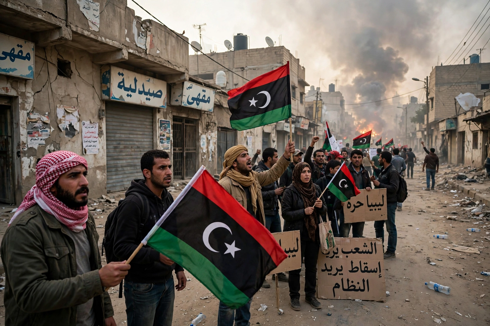

The Libyan civil war, also known as the First Libyan Civil War, was an armed conflict in 2011 in Libya between forces loyal to Colonel Muammar Gaddafi and rebel groups seeking to oust his government.

Libyan civil warGaddafi had ruled since 1969. Inspired by the Arab Spring uprisings in Tunisia and Egypt, protests began in Benghazi in February 2011 over the arrest of a human rights lawyer. Security forces fired on demonstrators, sparking rebellion.
Rebels formed the National Transitional Council. Government forces retook territory and threatened Benghazi, prompting UN Security Council Resolution 1973 authorising a no-fly zone and protection of civilians. NATO, led initially by France, Britain and the United States, began airstrikes on 19 March 2011 under Operation Odyssey Dawn / Unified Protector.
After months of stalemate, rebels advanced on Tripoli in August. Gaddafi fled; he was captured and killed in Sirte on 20 October 2011. The NTC declared liberation on 23 October.
Libya held elections in 2012, but militia fragmentation led to a second civil war from 2014. See Muammar Gaddafi, Arab Spring, NATO.
Estimates of deaths range from several thousand to around 25,000. War crimes were alleged on both sides and investigated by the International Criminal Court.